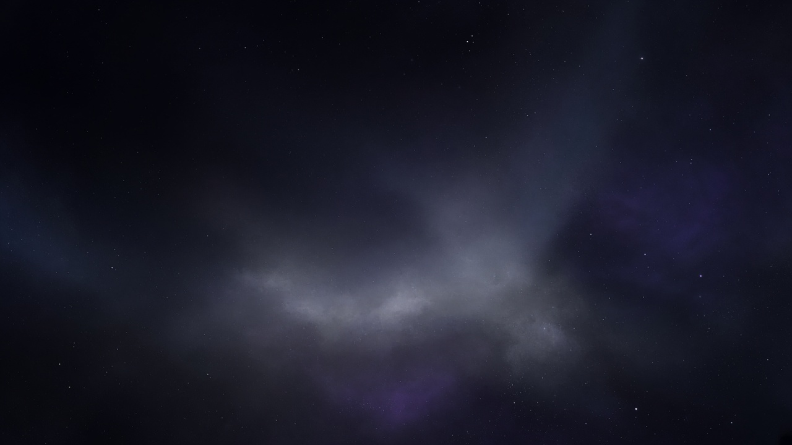

Парадокс Ферми звучит так: если Вселенная такая огромная и старая, где все остальные? Почему мы не видим признаков других цивилизаций?
Обычно ответ ищут в космосе. Но если посмотреть на это через нашу практику, парадокс обретает совершенно другой смысл.
Перед нами только мы. Наши незавершенные состояния. Мы не можем встретить сами себя, несмотря на то что обозримая Вселенная такая огромная.
Пока наши состояния не завершены, они занимают всё пространство. Мир кажется отдельным и угрожающим, а «другие» — либо врагами, либо чужими. Мы смотрим на них, но не видим в них себя. Поэтому нам кажется, что мы одиноки во Вселенной.
Но как только мы смотрим на мир напротив как на продолжение своих состояний, происходит переворот.
Мы понимаем, что «другой» — это не что-то отдельное. Это часть нас, которая просто выглядит по-другому. Мы встречаем себя там, где раньше видели пустоту или угрозу.
Парадокс Ферми решается не в космосе. Он решается внутри. Мы не видим других, потому что сначала должны завершить свои состояния. И тогда Вселенная перестает быть пустой. Она становится продолжением того пространства, которое мы собрали.